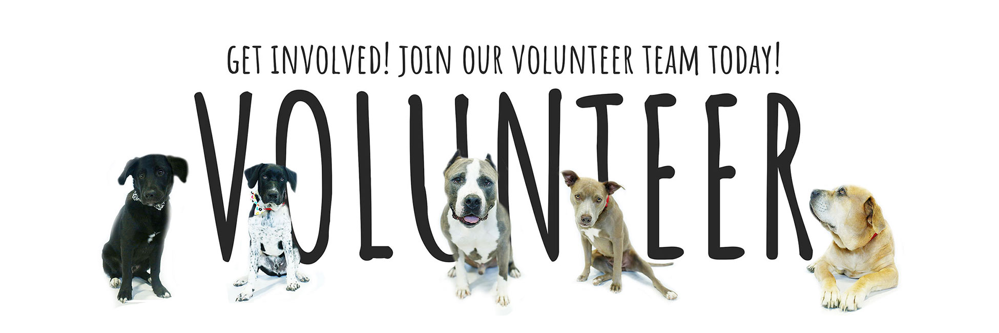

Contact Us
We would love to hear from you. Reach out if you have questions about adoptions, donations, volunteering, or animal rescue services.
Helping animals starts with community support.

Contact Information
Email: contact@humanelabs.org
Phone: (800) 555-1234
Location: Iron Springs Rd, Cedar City, UT 84721
Office Hours: Monday - Friday, 9:00 a.m. to 5:00 p.m.
Open in Google MapsHow You Can Help
Adoption gives rescued animals a safe home, stability, and a second chance at life.
Donations help provide food, shelter, medical treatment, and everyday care for animals in need.
Sharing rescue stories helps more people learn about adoption, animal welfare, and ways to support the rescue.
Volunteers make a big difference by helping with events, care routines, and creating a welcoming environment for rescued animals.